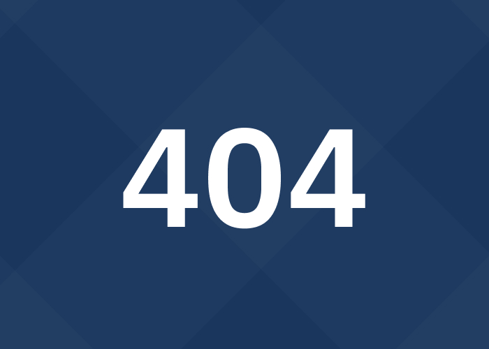

<section class="notfound section-offset-bottom section-offset-top">
  <div class="container">
    <div class="notfound__inner">
      <div class="notfound__wrap">
        <h1 class="notfound__title">
          Страница не найдена
        </h1>
        <div class="notfound__descr">
          <p>Похоже, эта ссылка устарела, а страница переместилась или больше не существует — но поддержка рядом.</p>
          <p>Вернитесь на главную — там вы найдёте всю актуальную информацию о лечении алкогольной и наркотической
            зависимости в клинике «Здоровье Нации».</p>
          <p>Если вам нужна срочная помощь — мы доступны круглосуточно. Анонимно, с уважением и без осуждения.</p>
        </div>
        <div class="notfound__btns">
          <a href="/" class="transparent-btn standart-btn notfound__btn">Вернуться на главную</a>
          <button
            class="popup-btn standart-btn primary-btn down-fade to_animate change__item-btn change__item-btn_current animated"
            data-path="popup-change">
            Получить консультацию
          </button>
        </div>

      </div>
      <picture class="notfound__picture">
        <source srcset="assets/img/404.webp" type="image/webp" />
        
      </picture>

    </div>
  </div>
</section>